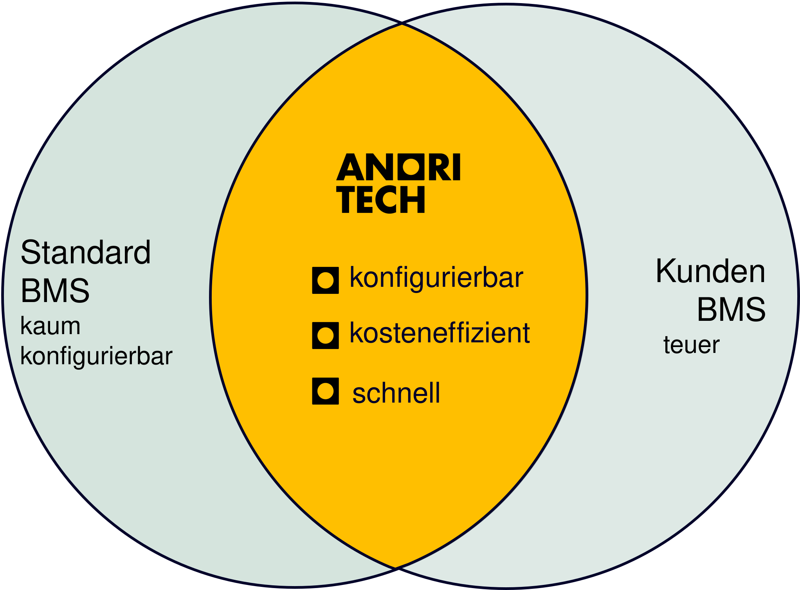
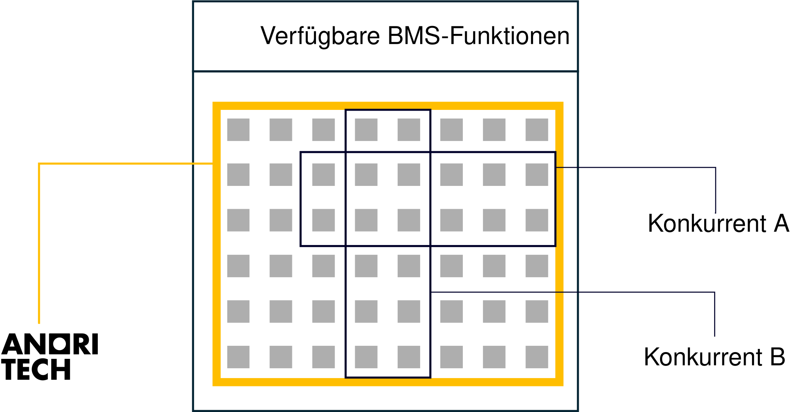
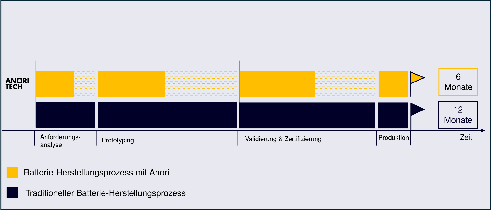

Konfigurierbare Batterie Management Systeme
Ein passgenaues, zertifizierbares BMS. Geliefert in Tagen statt Monaten.


Von der Anforderung bis zur Lieferung: Ihr individuelles BMS in Monaten Tagen mit der konfigurierbaren Plattform von Anori.
Entkommen Sie dem BMS-Dilemma.
Standard-BMS
Systeme von der Stange sind zu starr. Neue Zellchemien, Spannungen oder Schnittstellen stoßen schnell an harte Grenzen.
Individual-BMS
Individuelle Entwicklung, extern beauftragt oder intern gebaut, ist langsam, teuer und bindet genau die Ingenieure, die Sie für Ihr Kernprodukt brauchen.
Anori BMS
Eine standardisierte Hardware-Plattform, per Software konfiguriert. Eine neue Chemie braucht einen neuen Parametersatz, keinen neuen Code.


Wählen Sie die Module für Ihren Anwendungsfall.
Anori arbeitet mit einem modularen System. Je nachdem, welche Zellchemie, Spannung, Stromstärke usw. Sie benötigen, stellen wir automatisiert das BMS zusammen, das zu Ihrem Anwendungsfall passt.
„Nach Gesprächen mit über 60 europäischen Batterieherstellern haben wir immer wieder gehört, dass sie Kundenaufträge ablehnen müssen, weil sie wissen, dass sie kein passendes BMS schnell genug bekommen würden. Unsere modulare BMS-Plattform ändert das. Wir liefern ein angepasstes BMS in Tagen.“

Zertifizierungs-Support inklusive.
Üblicher Ansatz
Sicherheit und Zertifizierung werden erst am Ende des Projekts angegangen – dort ist jeder Befund teuer und verzögert den Markteintritt.
Anori-Ansatz
Einzelne Module sind nach gängigen Normen vorqualifiziert, Pre-Compliance-Tests sind Teil unserer Roadmap. Die Zertifizierung des Gesamtsystems wird dadurch deutlich einfacher.
Entwickelt von einem Team mit zertifizierter Functional-Safety-Expertise aus der Automobilelektronik.

6 Monate schneller am Markt.

Vorkonfigurierte Standardwerte beschleunigen die Anforderungsanalyse. Modulare Komponenten ermöglichen schnelles Prototyping. Vorqualifizierte Module verringern den Aufwand für Validierung und Zertifizierung.
Statt bei null anzufangen, starten Sie mit einer bewährten, testbereiten Plattform und passen sie an Ihr Pack an.
Eine Plattform, jede Anwendung
Dieselbe Anori-Hardware, konfiguriert für unterschiedliche Chemien, Spannungen und Lastprofile. Unser BMS eignet sich für Marine, Off-Grid-Speicher, Robotik, LEV und Drohnen.


Marine
Zuverlässige Energie für Boote und Offshore-Systeme.

Off-Grid-Speicher
Stationäre Speicher abseits des Stromnetzes.

Robotik
Sichere, kompakte Energie für autonome Systeme.

LEV
Leichte Elektrofahrzeuge, vom Scooter bis zum Cargo-Bike.

Drohnen
Gewichtskritische Packs mit hohen Entladeströmen.
Eine Plattform. Ihr individueller Anwendungsfall.
Sie definieren die Anforderungen. Wir liefern ein konfiguriertes, zertifizierbares BMS und erfassen die Batteriedaten über die gesamte Lebensdauer, damit Sie Ihr Batteriepack weiter verbessern können.

Online konfigurieren
Zellchemie, Spannungslage, Schnittstellen und gewünschte Funktionen im Anori-Konfigurator angeben.

Wir passen die Plattform an
Ihre Konfiguration wird auf die standardisierte Hardware angewendet. Anpassungen laufen durch unsere Software, nicht über eine neue Entwicklung.

Prototyp & Zertifizierung
Vorqualifizierte Module und Unterstützung bei der Zertifizierung bringen Ihr Batteriepack mit minimalem Aufwand durch die Validierung.

Liefern & weiter verbessern
Die Hardware wird geliefert. Software, Analysen und Updates begleiten Ihre Batterie über 10+ Jahre.
Entwickelt in Hamburg.
Anori Tech entwickelt und testet seine BMS-Plattform im eigenen Labor in den Startup Labs Bahrenfeld, Hamburg. Das Gründerteam vereint zertifizierte Functional-Safety-Expertise, Fertigungserfahrung aus der Automobilelektronik und Go-to-Market-Kompetenz.
Anori wird vom Battery Startup Incubator (BaStI) der TUM Venture Labs und dem Hightech-Inkubator QIMP unterstützt.
In den Medien


Ihre Fragen. Unsere Antworten.
Eine Batterie besteht aus vielen einzelnen Zellen. Damit daraus ein sicheres, langlebiges Produkt wird, braucht sie ein Batteriemanagementsystem, kurz BMS. Das BMS ist das elektronische Gehirn der Batterie: Es überwacht jede einzelne Zelle, steuert das Laden und Entladen und schaltet ab, bevor etwas passiert. Ohne BMS gibt es keine Batterie, die man verkaufen darf.
Das Problem: Jede Batterie ist anders gebaut, also muss auch jedes BMS anders sein. Bisher hatten Hersteller nur zwei Möglichkeiten. Entweder ein Standardprodukt kaufen, das nicht richtig passt. Oder ein eigenes entwickeln lassen, was Monate dauert und einen sechsstelligen Betrag kostet.
Anori Tech bietet einen dritten Weg: Bei uns wird das BMS konfiguriert statt entwickelt. Sie sagen uns, welche Zellen Sie verbauen und welche Spannung und Ströme Sie brauchen. Wir stellen unsere Plattform per Software genau darauf ein. Das Angebot kommt innerhalb von 24 Stunden, der Prototyp in 10 Tagen.
Der Markt liegt heute an zwei Enden. Auf der einen Seite Standard-BMS von der Stange, die man nehmen muss, wie sie sind. Auf der anderen Entwicklungsdienstleister, die über Monate etwas Neues bauen und dafür entsprechend abrechnen.
Anori liegt dazwischen und kombiniert drei Dinge in einem Produkt: eine standardisierte, erprobte Hardware-Plattform, Konfiguration per Software statt Neuentwicklung, und Unterstützung bei der Zertifizierung durch vorgeprüfte Module.
Ein individuelles BMS wird für genau einen Anwendungsfall entwickelt und passt dann auch zu hundert Prozent. Aber eben nur zu diesem einen Fall. Die Entwicklung kostet einen sechsstelligen Betrag und dauert Monate. Bei sehr großen Stückzahlen verteilt sich das auf viele Einheiten und rechnet sich. Bei kleinen und mittleren Serien rechnet es sich nie.
Genau da setzen wir an. Unsere Plattform ist modular aufgebaut, deshalb liefern wir ein maßgeschneidertes BMS auch dann, wenn Sie nur wenige hundert Einheiten bauen.
Der zweite Unterschied ist der Weg dorthin. Statt langer Telefonate und E-Mails hin und her gehen Sie durch den Konfigurator und wissen danach, was Sie bekommen und was es kostet.
Der dritte Unterschied ist, was danach passiert. Die Betriebsdaten Ihrer Batterien laufen in der Anori Cloud zusammen. Sie sehen, wie Ihre Packs im Feld tatsächlich genutzt werden, und können daraus für die nächste Generation lernen, bis hin zur Wahl der Zellchemie.
Unser Fokus liegt aktuell auf dem Niedervolt-Bereich mit 12 V, 24 V und 48 V bis 250 A. Dort ist das Produkt heute verfügbar. Gleichzeitig arbeiten wir bereits daran, die Plattform für den High-Voltage-Bereich zu öffnen, weil die Architektur von Anfang an spannungs-skalierbar ausgelegt ist. Wenn Sie ein High-Voltage-Projekt planen, sprechen Sie uns an.
Drei Entwicklungen treffen aufeinander:
- Die Regulatorik zieht an. Die EU-Batterieverordnung (2023/1542) erhöht die Anforderungen an Nachweisführung, Daten und Lebenszyklus deutlich.
- Die Anwendungsvielfalt wächst. Drohnen, Robotik, Marine, LEV und Off-Grid-Speicher stellen sehr unterschiedliche Anforderungen an dasselbe Bauteil.
- Europa will unabhängiger werden. Asiatische Standard-BMS sind weder europäisch zertifiziert noch anpassbar.
Ein starres BMS kann auf keinen dieser drei Punkte reagieren. Ein konfigurierbares schon.
Konfigurieren Sie Ihr BMS.
Schicken Sie uns Ihre Anforderungen, erhalten Sie ein Angebot innerhalb von 24 Stunden und einen Prototyp in 10 Tagen.
Lieber direkt sprechen? +49 151 6701 1710 oder team@anoritech.com